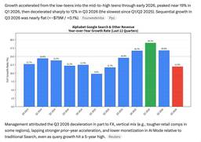
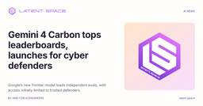
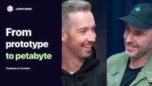
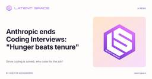
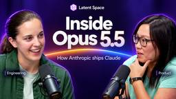
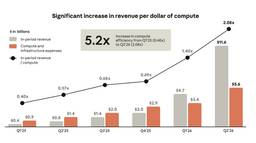

Latent Space
https://latent.space/
Technical conversations, original reporting, and practical guides for the engineers building with AI.
フィード
Agents Prompt People: Using Agents for Long-Horizon Financial Work
Latent Space
Arca's head of AI discusses persistent memory, the benefits of a custom harness, and agentic workflows that span days.
3時間前

[AINews] Google admits AI Mode hurts Search revenue; -15% $500B drop worst since 2004 IPO. AI Bear Market coming?
Latent Space
It turns out you cannot have your cake AND eat it
14時間前
[AINews] Building AIE CODE: The top Coding Agent Conference
Latent Space
Mistral’s open-weight release, frontier monitoring, and the day’s AI Twitter and Reddit recaps.
1日前
Can Frontier Models See Past a Decoy? Elorian Tests Visual Reasoning
Latent Space
A new decoy counting benchmark exposes a gap between seeing and reasoning. Elorian’s Glimpse tries to bridge it by thinking with images.
2日前

[AINews] Gemini 4 Carbon tops leaderboards, launches for cyber defenders
Latent Space
Google’s new frontier model leads independent evals, with access initially limited to trusted defenders.
3日前

Why Agents Love Supabase
Latent Space
Paul Copplestone and Ant Wilson on building the backend for AI agents
3日前

[AINews] Anthropic ends Coding Interviews: "Hunger beats tenure"
Latent Space
Since coding is solved, why code for the job?
3日前

How Anthropic ships Claude with Claude: Separating the Brain from the Hands
Latent Space
Katelyn Lesse and Angela Jiang on Opus 5.5, the Claude Platform, and the engineering behind AI agents.
4日前
How Anthropic ships the #1 LLM in the World safely: Separating the Brain from the Hands
Latent Space
Katelyn Lesse and Angela Jiang join Latent Space to explain the engineering behind the Claude Platform: launching Opus 5.5, separating the model’s “brain” from the agent’s “hands,” scaling APIs, and building reliable managed agents. A new introduction ...
4日前
Coding From the Himalayas With an Offline AI Agent
Latent Space
How to set up and run an offline coding agent using OpenCode, Ollama and Qwen.
4日前

[AINews] Anthropic files for $2T IPO in 2 weeks: 1400% growth rate, 48% of revenue through cloud partners, 85% margin, $1B op profit in Q2, $134B cash in bank and $10B lifetime burn
Latent Space
The S-1, the numbers, and the reactions.
4日前
[AINews] Kimi 3.1 Pro 104BA-2.8T: Fable-5.1-Class Open Weights narrows Closed-AI lead to 1 month... and Pro Highspeed API with 2-3× speed
Latent Space
We have Fable at home... or so we are being told by paid shills
7日前

AI Is Getting Good at Math. Here’s Why.
Latent Space
AI models are solving more mathematical problems. A pattern is emerging in their successes that could help us predict which problems they’ll solve next.
8日前
Why AI Compute Comes in Rectangles — Erik Bernhardsson, Modal CEO
Latent Space
Elastic GPUs, sandbox growth, and the economics of the agent cloud
9日前
You are the Team — Anekha Sokhal, Moshi
Latent Space
How Moshi turns market data into actionable insights, and why AI tools have to fit the trader’s workflow.
9日前
Claude Mods: Flipping the Harness Inside Out
Latent Space
Claude Mods is an early form of the Attention Interface. It flips the agent harness paradigm from the harness facing the machine, to the harness facing the human.
10日前
[AINews] DeepSeek DeepInfer: Open Source SOTA Inference running 155T toks/day/cluster making $22m/day at ~80% margin for a 81 day payback
Latent Space
An open source “bomb” drops from China
11日前
AI for the Fortune 2000: How Tenex Builds an AI-Native SDLC — Alex Lieberman & CJ Hess
Latent Space
Paying for outcomes, building with agents, and the last mile of enterprise AI adoption
11日前